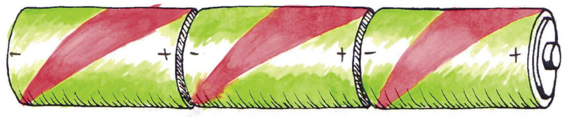
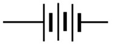
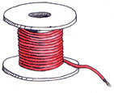
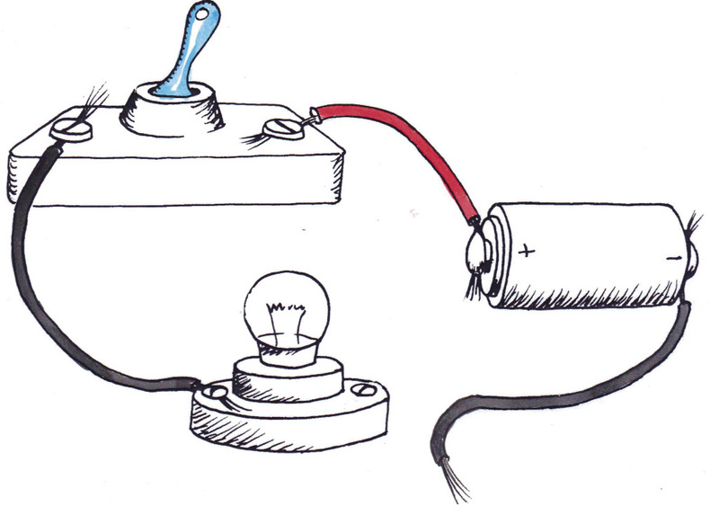

<div class="container">
  <div id="contents" class="col-md-12 main-content"><h1 xmlns="http://www.w3.org/1999/xhtml" id="toc-id-8">Simple electric circuits</h1>

    <p xmlns="http://www.w3.org/1999/xhtml" class="x--Body-opener">In this chapter, you will learn what
    an electric circuit is and how to connect all the parts of an
    electric circuit. You will learn how to draw circuit diagrams.
    You will also learn how electromagnets work and how to make a
    simple electromagnet.</p>

     
<figure xmlns="http://www.w3.org/1999/xhtml">
    <p class="Normal"><span></span> </p>
<figcaption>
    <p class="x--caption">Figure 1: A bulb can form part of an
    electric circuit. The filament in the bulb forms part of the
    circuit<a id="Anchor-12"/>.</p>
</figcaption></figure><figure xmlns="http://www.w3.org/1999/xhtml">
    <p class="Normal"><span></span> </p>
<figcaption><p>Figure 2</p></figcaption></figure>
    <h2 xmlns="http://www.w3.org/1999/xhtml" id="toc-id-9">Circuits and components</h2>

    <p xmlns="http://www.w3.org/1999/xhtml" class="x--Body-Text">An electric circuit needs three basic
    things to work:</p>

    <p xmlns="http://www.w3.org/1999/xhtml" class="x--Body-investigation-hanging">1. An energy source.
    This can be a cell or a stronger power source.</p>

    <p xmlns="http://www.w3.org/1999/xhtml" class="x--Body-investigation-hanging">2. A complete circuit.
    There has to be an unbroken pathway of conducting materials
    through which the electrical current can flow.</p>

    <p xmlns="http://www.w3.org/1999/xhtml" class="x--Body-investigation-hanging">3. A load. There has
    to be some form of resistance in the circuit. This could be in
    the form of a light bulb, a resistor, a motor or other
    electrical components.</p>

    <p xmlns="http://www.w3.org/1999/xhtml" class="x--Body-indent-1-3">To show how an electric circuit
    should be connected, we draw circuit diagrams with symbols that
    show each <span class="char-style-override-4"><b>component</b></span>.
    This is a simple way to represent the electric circuit. This
    table shows the symbol we use for each component:</p>

    <div xmlns="http://www.w3.org/1999/xhtml" class="aside">
      <p class="x--Body-box-no-indent">A <span class="char-style-override-1"><b>component</b></span> is one part of a
      whole system.</p>
    </div>

    <table xmlns="http://www.w3.org/1999/xhtml" id="table-12" class="No-Table-Style"><tbody><tr class="Row-Column-7"><td class="cell-style-override-1">
            <p class="x--Body-Text"><b>Name</b></p>
          </td>

          <td class="cell-style-override-1">
            <p class="x--Body-Text"><b>Picture</b></p>
          </td>

          <td class="cell-style-override-1">
            <p class="x--Body-Text"><b>Symbol</b></p>
          </td>
        </tr><tr class="Row-Column-76"><td class="cell-style-override-1">
            <p class="x--Body-Text">electrochemical cell or
            cell</p>
          </td>

          <td class="cell-style-override-1">
            <p class="x--Body-Text"><span></span> </p>
          </td>

          <td class="cell-style-override-1">
            <p class="x--Body-Text"><span></span> </p>
          </td>
        </tr><tr class="Row-Column-79"><td class="cell-style-override-1">
            <p class="x--Body-Text">batteries in series, which
            means they are next to each other</p>
          </td>

          <td class="cell-style-override-1">
            <p class="x--Body-Text"><span></span> </p>
          </td>

          <td class="cell-style-override-1">
            <p class="x--Body-Text"><span></span> </p>
          </td>
        </tr><tr class="Row-Column-82"><td class="cell-style-override-1">
            <p class="x--Body-Text">switch</p>
          </td>

          <td class="cell-style-override-1">
            <p class="x--Body-Text"><span></span> </p>
          </td>

          <td class="cell-style-override-1">
            <p class="x--Body-Text"><span></span> </p>
          </td>
        </tr><tr class="Row-Column-85"><td class="cell-style-override-1">
            <p class="x--Body-Text">light bulb</p>
          </td>

          <td class="cell-style-override-1">
            <p class="x--Body-Text"><span></span> </p>
          </td>

          <td class="cell-style-override-1">
            <p class="x--Body-Text"><span></span> </p>
          </td>
        </tr><tr class="Row-Column-88"><td class="cell-style-override-1">
            <p class="x--Body-Text">resistor</p>
          </td>

          <td class="cell-style-override-1">
            <p class="x--Body-Text"><span></span> </p>
          </td>

          <td class="cell-style-override-1">
            <p class="x--Body-Text"><span></span> </p>
          </td>
        </tr><tr class="Row-Column-91"><td class="cell-style-override-1">
            <p class="x--Body-Text">buzzer</p>
          </td>

          <td class="cell-style-override-1">
            <p class="x--Body-Text"><span></span> </p>
          </td>

          <td class="cell-style-override-1">
            <p class="x--Body-Text"><span></span> </p>
          </td>
        </tr><tr class="Row-Column-94"><td class="cell-style-override-1">
            <p class="x--Body-Text">conducting wires</p>
          </td>

          <td class="cell-style-override-1">
            <p class="x--Body-Text"><span></span> </p>
          </td>

          <td class="cell-style-override-1">
            <p class="x--Body-Text"><span></span> </p>
          </td>
        </tr></tbody></table><p xmlns="http://www.w3.org/1999/xhtml" class="x--Body-indent">The following is an example of a
    simple electric circuit. This circuit consists of a cell, a
    switch, and a light bulb that have been connected by insulated
    copper conducting wires.</p>

    <p xmlns="http://www.w3.org/1999/xhtml" class="x--Body-indent">Circuit diagrams are shown as
    rectangular boxes, even though the real circuit looks quite
    different.</p>
<figure xmlns="http://www.w3.org/1999/xhtml">
    <p class="x--Body-indent"><span></span> </p>
<figcaption>
    <p class="x--caption">Figure 3</p>
</figcaption></figure>
    <h3 xmlns="http://www.w3.org/1999/xhtml">Questions to answer</h3>

    <p xmlns="http://www.w3.org/1999/xhtml" class="x--Body-investigation-hanging para-style-override-21">1. What
    are the three things that you need to make an electric
    circuit?</p>
    <hr xmlns="http://www.w3.org/1999/xhtml"/><p xmlns="http://www.w3.org/1999/xhtml" class="x--Body-investigation-hanging para-style-override-9">
    2. How do you think you can see if the circuit in the picture
    at the top of this page is working?</p>
    <hr xmlns="http://www.w3.org/1999/xhtml"/> <p xmlns="http://www.w3.org/1999/xhtml" class="x--Body-investigation-hanging para-style-override-9">
    3. If you made a mistake while putting the circuit together and
    the connections were not complete, what do you think would
    happen?</p>
    <hr xmlns="http://www.w3.org/1999/xhtml"/> 
    <h2 xmlns="http://www.w3.org/1999/xhtml" id="toc-id-10">Building your own electrical circuit</h2>

    <h3 xmlns="http://www.w3.org/1999/xhtml">Build simple circuits</h3>

    <p xmlns="http://www.w3.org/1999/xhtml"><b>For this
    practical exercise, you will need the following objects:</b></p>

    <ul xmlns="http://www.w3.org/1999/xhtml"><li class="x--Body-text-bullet"> several
      1,5 V cells or one 9 V cell,</li>

      <li class="x--Body-text-bullet">  insulated
      copper wires,</li>

      <li class="x--Body-text-bullet">  a switch,
      and</li>

      <li class="x--Body-text-bullet">  a light
      bulb.</li>
    </ul><p xmlns="http://www.w3.org/1999/xhtml" class="x--Body-investigation-hanging">1. Divide into groups
    of three or four.</p>


    <figure xmlns="http://www.w3.org/1999/xhtml">
      <div class="frame-4"></div>

      <figcaption>
        <p class="x--caption">Figure 4</p>
      </figcaption>
    </figure>
    <p xmlns="http://www.w3.org/1999/xhtml" class="x--Body-investigation-hanging--1-3-">2. Connect the
    components as shownin the diagram in Figure 4.</p>
    <p xmlns="http://www.w3.org/1999/xhtml" class="x--Body-investigation-hanging-a-">(a) Does the light
    bulb light up?</p><hr xmlns="http://www.w3.org/1999/xhtml"/>

     

    <p xmlns="http://www.w3.org/1999/xhtml" class="x--Body-investigation-hanging-a-">(b) Why does the
    light bulb not light up?</p>

    <hr xmlns="http://www.w3.org/1999/xhtml"/>

    <p xmlns="http://www.w3.org/1999/xhtml" class="x--Body-investigation-hanging">3. Now try this
    circuit:</p>
 <figure xmlns="http://www.w3.org/1999/xhtml">
      <div class="frame-4"></div>

      <figcaption>
        <p class="x--caption para-style-override-24">Figure 5</p>
      </figcaption></figure>
    <p xmlns="http://www.w3.org/1999/xhtml" class="x--Body-investigation-hanging-a-">(a) Does the light
    bulb light up?</p>

    <hr xmlns="http://www.w3.org/1999/xhtml"/>

    <p xmlns="http://www.w3.org/1999/xhtml" class="x--Body-investigation-hanging-a-">(b) Why does the
    light bulb light up?</p>

   
   
    <hr xmlns="http://www.w3.org/1999/xhtml"/><p xmlns="http://www.w3.org/1999/xhtml" class="x--Body-investigation-hanging para-style-override-10">4. Draw
    a circuit diagram to show how you connected the components in
    your circuit. Remember to use a ruler.</p>

    <p xmlns="http://www.w3.org/1999/xhtml" class="x--Body-Text para-style-override-11">
            <span></span> </p>
           <p xmlns="http://www.w3.org/1999/xhtml" class="x--Body-investigation-hanging">5. Which of the
    components in your circuit is the energy source?</p>
    <hr xmlns="http://www.w3.org/1999/xhtml"/><p xmlns="http://www.w3.org/1999/xhtml" class="x--Body-investigation-hanging">6. Which of the
    components in your circuit is the load?</p>
    <hr xmlns="http://www.w3.org/1999/xhtml"/> 
    <h2 xmlns="http://www.w3.org/1999/xhtml" id="toc-id-11">Electromagnets</h2>

    <p xmlns="http://www.w3.org/1999/xhtml" class="x--Body-Text">Now we are going to look at a very
    interesting phenomenon, which is the relationship between
    electricity and magnetism.</p>

    <p xmlns="http://www.w3.org/1999/xhtml" class="x--Body-indent">Electromagnets are magnets that are
    created using electricity. They are not permanent magnets. They
    are only magnets when electricity flows through them. When the
    electricity is switched off, they lose their magnetism.</p>

    <p xmlns="http://www.w3.org/1999/xhtml" class="x--Body-indent">Electromagnets are very useful for
    separating scrap material. Scrap material in waste dumps is
    usually a mixture of metals and non-metals. The ferrous metals,
    which are those that contain iron, are still valuable. It takes
    a lot of time to sort waste material by hand.</p>

    <p xmlns="http://www.w3.org/1999/xhtml" class="x--Body-indent-1-3 para-style-override-26">As you
    learnt last week, ferrous metals are attracted to magnets. An
    electromagnet is passed through the waste material and all the
    ferrous metals stick to it. The electromagnet is then moved
    over a collection bin. When the electromagnet is switched off,
    the ferrous metals are no longer attracted to it and they fall
    into the bin.</p>

    <figure xmlns="http://www.w3.org/1999/xhtml">
      <div class="frame-4"></div>

      <figcaption>
        <p class="x--caption">Figure 6: An electromagnet is used to
        sort metal in a scrap metal yard.</p>
      </figcaption>
    </figure>

    <p xmlns="http://www.w3.org/1999/xhtml" class="x--Body-indent-1-3 para-style-override-26">Apart from
    being useful to sort scrap metal, electromagnets are often used
    as components in other electrical devices. Some examples
    include:</p>

    <ul xmlns="http://www.w3.org/1999/xhtml"><li class="x--Body-text-bullet para-style-override-27">
        in motors:
      to rotate the motor.</li>

      <li class="x--Body-text-bullet para-style-override-27">
        in
      loudspeakers: an electromagnet responds to the sound signals
      and amplifies them.</li>

      <li class="x--Body-text-bullet para-style-override-27">
        in
      computer hard drives: electromagnetism is used to write and
      store data.</li>

      <li class="x--Body-text-bullet para-style-override-27">
       in
      electric bells: electromagnets attract and release the hammer
      of the bell.</li>

      <li class="x--Body-text-bullet para-style-override-27">
        in a
      magnetic door switch: electromagnets are useful to close and
      open doors.</li>
    </ul><p xmlns="http://www.w3.org/1999/xhtml" class="x--Body-indent">In all of these applications, the
    fact that the magnetic force can be controlled by switching the
    electric circuit on and off is the property that makes the
    electromagnet so useful.</p>

    <p xmlns="http://www.w3.org/1999/xhtml" class="x--Body-indent para-style-override-28">Now let us
    look at a simple electromagnet in the classroom. Your teacher
    can do this experiment as a demonstration.</p>

    <h3 xmlns="http://www.w3.org/1999/xhtml">Make a simple electromagnet</h3>

    <p xmlns="http://www.w3.org/1999/xhtml"><b>For this
    activity, you will need the following objects:</b></p>

    <ul xmlns="http://www.w3.org/1999/xhtml"><li class="x--Body-text-bullet">  a long
      iron nail, about 15 cm long. If you don't have a long nail,
      you can make a bundle of several pieces of iron wire,</li>

      <li class="x--Body-text-bullet">  3 m of
      insulated copper wire,</li>

      <li class="x--Body-text-bullet">  a D-cell
      cell,</li>

      <li class="x--Body-text-bullet">  wire
      stripper, and</li>

      <li class="x--Body-text-bullet">  metal
      paperclips.</li>
    </ul><p xmlns="http://www.w3.org/1999/xhtml" class="x--Body-investigation-hanging">1. Use the wire
    stripper to strip a small piece of the insulation from both
    ends of the insulated copper wire.</p>

    <p xmlns="http://www.w3.org/1999/xhtml" class="x--Body-investigation-hanging">2. Neatly wrap the
    iron nail with the insulated wire. Make sure that you keep the
    wire turning in the same direction. Keep the coils close
    together.</p>

    <figure xmlns="http://www.w3.org/1999/xhtml">
      <div class="frame-4"></div>

      <figcaption>
        <p class="x--caption">Figure 7: A simple electromagnet</p>
      </figcaption>
    </figure>

    <p xmlns="http://www.w3.org/1999/xhtml" class="x--Body-investigation-hanging">3. Now wrap one of the
    stripped ends of the wire around the positive terminal of your
    cell.</p>

    <p xmlns="http://www.w3.org/1999/xhtml" class="x--Body-investigation-hanging--1-3-">4. Wrap the
    other stripped end around the negative terminal of your
    cell.</p>

    <p xmlns="http://www.w3.org/1999/xhtml" class="x--Body-investigation-hanging--1-3-">5. To test if
    your electromagnet is working, see whether it can pick up
    paperclips. If the paperclips are attracted to the iron rod,
    then your electromagnet is working!</p> <hr xmlns="http://www.w3.org/1999/xhtml"/>

    <div xmlns="http://www.w3.org/1999/xhtml" class="aside">
      <p class="x--Body-box-heading"><b>Safety note:</b></p>

      <p class="x--Body-box-no-indent">The iron nail can become
      quite hot, so be careful not to burn your hands!</p>
    </div>
   <p xmlns="http://www.w3.org/1999/xhtml" class="x--Body-investigation-hanging">6. Once you have
    tested your electromagnet, disconnect the wire from one
    terminal of the cell. Now try to pick up the paperclips. Are
    the paperclips attracted to the iron rod?</p>
    <hr xmlns="http://www.w3.org/1999/xhtml"/> <p xmlns="http://www.w3.org/1999/xhtml" class="x--Body-investigation-hanging">7. How can you use the
    electromagnet to pick up paperclips from one place and then put
    them in a different place?</p>
    <hr xmlns="http://www.w3.org/1999/xhtml"/> 
    <h4 xmlns="http://www.w3.org/1999/xhtml">How does an
    electromagnet work?</h4>

    <p xmlns="http://www.w3.org/1999/xhtml" class="x--Body-indent">There is a strong relationship
    between electricity and magnetism. The electricity in the wire
    coils creates a magnetic field. The iron nail is right in the
    middle of this magnetic field. Because the iron nail is a
    ferromagnetic material, it becomes magnetised by the field. The
    magnetic field from the electric current is made much larger,
    or amplified, by the magnetic field in the iron nail. Without
    the iron core, the magnetic field would be very weak. When the
    electric current is switched off, the iron nail loses its
    magnetism.</p>

    <h3 xmlns="http://www.w3.org/1999/xhtml">Next week</h3>

    <p xmlns="http://www.w3.org/1999/xhtml" class="x--Body-Text">Next week you will revise mechanical
    systems and frame structures in preparation for this term's
    mini-PAT.</p>

  </div>
</div>